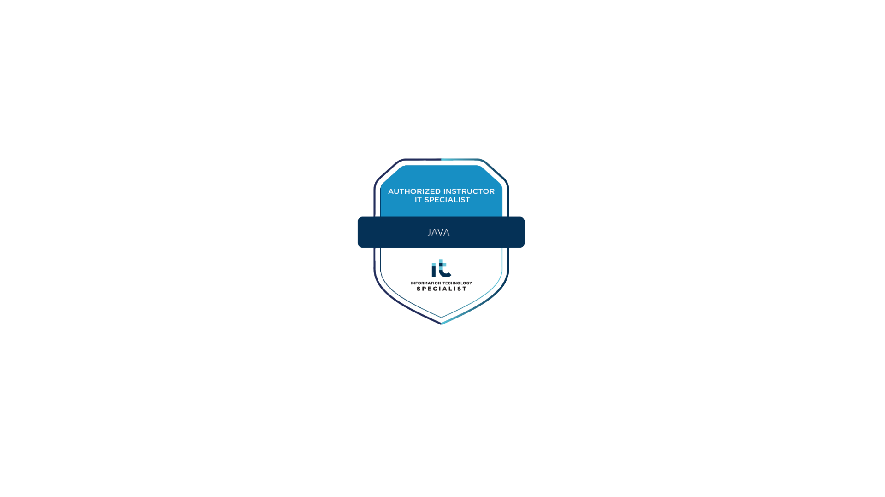
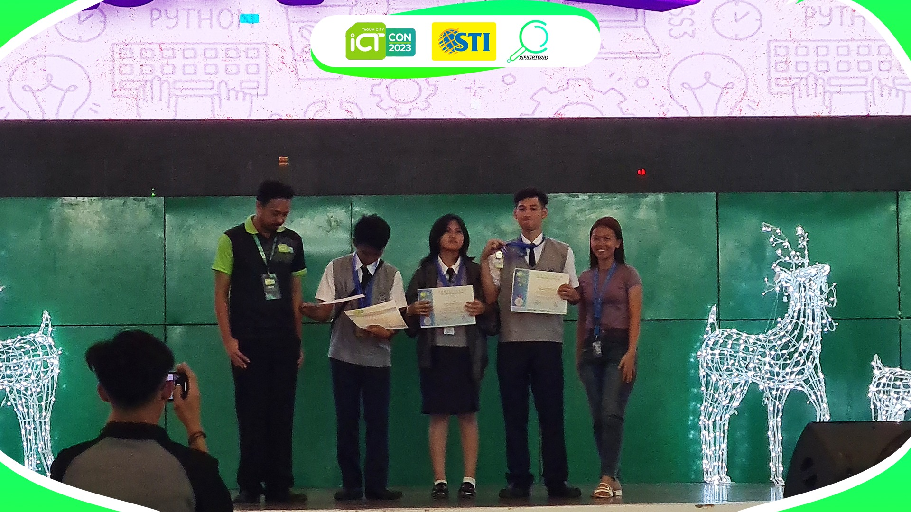

Achievements & Certifications
-

ITS Java SpecialistCertified Java programming specialist with expertise in object-oriented programming.
-

ICT Con 2023 Quiz Bee - 1st Runner UpSecured 1st-runner up place in the regional ICT competition showcasing technical knowledge.
-
 Davao Regional: Digital Career Participation Awardee
Davao Regional: Digital Career Participation AwardeeRecognized for outstanding participation in digital career development programs.
Previous Projects
-
 The Owtlette: Gamified Education Learning for Students
The Owtlette: Gamified Education Learning for StudentsInteractive learning platform that uses game mechanics to enhance student engagement.
-
 Public Education and Employment Services Office for Tagum City Hall Government Website
Public Education and Employment Services Office for Tagum City Hall Government WebsiteGovernment website providing public access to education and employment services.
-
 Macrina Melecio: Digital Inventory Management System
Macrina Melecio: Digital Inventory Management SystemComprehensive inventory management solution for business operations.
Web Development Projects
NASA NEO Tracker & APOD Archive
A web application for tracking Near-Earth Objects and browsing NASA's Astronomy Picture of the Day archive. Features real-time asteroid data, interactive visualizations, and responsive design.
- Real-time asteroid tracking with NASA NEO API
- Interactive APOD (Astronomy Picture of the Day) archive
- Responsive design for all devices
- Date filtering and search functionality
- Error handling and fallback systems
StrokeSense Landing Page
A responsive landing page for a Filipino heritage handwriting learning platform, built with HTML & CSS.